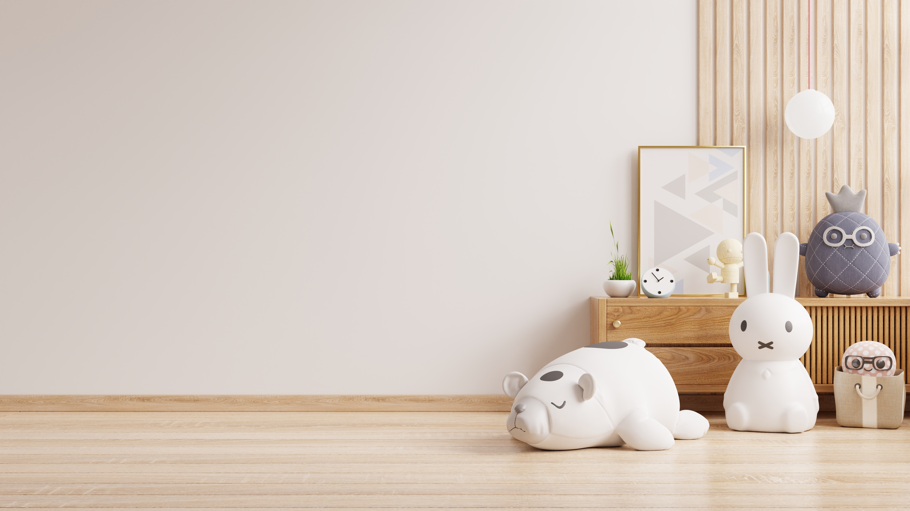

お部屋づくりはどうしたらいい？
～ 穏やかに過ごすためのお部屋づくり ～
「看取りのときのお部屋づくりとは？」
看取りの時をどのように過ごしていくかを考えるときに、お部屋づくりについて、悩むことはありませんか？
本人にとって最期まで穏やかに過ごせる、心地よい空間であることはもちろん、サポートをする家族にとってもそこでゆっくりと過ごせて、不安を少しでも軽くしてくれるようなお部屋づくりが出来れば、きっとよい看取りにつながっていくのではないかと思います。
自宅や病院、介護施設など、本人や家族の希望によって様々な選択肢がある中で、お部屋づくりで大切にしたいポイントや、過ごす場所によって異なる、工夫出来る方法について簡単にまとめてみました。
穏やかに過ごすためのお部屋づくりのこと、ぜひ参考にしてみてください。
目次
お部屋づくりの3つの基本
過ごす場所別・お部屋づくりのポイント
まとめ
お部屋づくりの3つの基本
まずはお部屋を作っていくうえで押さえたい、大切なポイントを3つご紹介します。
お部屋づくりの
大切な3つの
ポイント
Three important oint
本人にとってほとんどの時間を過ごすことになる、寝る場所の「寝具」は、一番丁寧に考えて用意したいもののひとつです。
お布団やベッドなど、寝具に対する本人の好みは様々あるかと思いますが、看取りの時期においては、リクライニング機能や高さ調節機能のある介護ベッドをチョイスするのがおすすめです。
終末期はどうしても体力が失われ、自分で体を起こすこともしにくくなってきます。
そんなとき介護ベッドであれば、背中を上げたり足を上げたりと、本人の姿勢を細かく調整することが出来るので、痛みや辛さを逃しやすい体勢を作りやすくなって、楽に過ごしやすくなります。
またこの時期は、呼吸から酸素を取り込んでいく力も、少しずつ衰えていってしまう状態になりやすいです。
酸素の取り込みがしにくくなってきた時は、まっすぐ横になっている姿勢より、少しベッドの背中を上げて角度をつけてあげると、呼吸を助けて本人の苦痛を和らげてくれたりします。
自宅に、元気な時に使っていた普通のベッドをお持ちの場合でも、可能ならば介護ベッドを取り入れるほうが、より本人にとって安楽に過ごしやすいお部屋になると思います。
家族にとっても、介護ベッドの高さを変える機能を上手に使うことで、介護の負担を軽くすることができ、腰痛などの予防にも役立ちます。

終末期には、身体の体温を調整する力が落ちて、寒気を感じやすかったり、急に熱を出したりと、体調に様々な変化が起きることがあります。
ですから室内の空調は適温に調整することを心がけ、体温調節は毛布や掛け布団で調節するほうが、本人にとって適切な体温に調整がしやすくなります。
また、この時期は食べたり飲んだりすることも徐々に出来なくなっていくことで、身体が脱水傾向になっていきます。
そうすると肌や唇も乾燥して、時には口角が切れてしまう、なんてこともあったりします。
そうならないために、お部屋を充分に加湿することは実はとても大切です。湿度計を置くなどして50％～60％の湿度が、心地よく過ごしやすいお部屋の湿度だと考えられています。

本人が過ごす場所と同じくらい大切にしたいのが、一緒に過ごす家族や友人などの過ごす場所です。
例えば、本人の介護ベッドの近くに座り心地の良い椅子を置いてみたり、テレビやラジオ、音楽プレーヤーなど、家族がそこで団欒しやすくなるものを置いてみましょう。
そうすることで本人と一緒に何気ないひと時を過ごすきっかけが多く生まれます。
本人の傍で家族がゆっくり過ごせる環境をつくることが、本人に寄り添った看取りの時間になっていくのではないでしょうか。
看取りを行う場所によって、環境や準備すべきものが違うものです。
自宅、病院、介護施設…それぞれの場所で穏やかに過ごすためにどんな工夫が出来るでしょうか。
ここでもお部屋づくりの3つのポイントを踏まえた上で考えていきましょう。

自宅で看取りを行っていくうえで、家のどのお部屋に本人が過ごす空間を作っていくのが良いのかを悩まれると思います。
これまで寝室に使っていたお部屋にするのか、それとも違うお部屋にするのがいいのか。
自宅の環境によって、また本人の希望にもよってもおすすめの場所は変わってきますが、考慮出来れば良いと思うことは、「家族の気配が感じられるお部屋に本人の過ごすベッドを設置したい」という点です。

そんな、いつもの暮らしがある場所の中で最期まで過ごせる事こそが、自宅で過ごすことの良さだと思います。
介護ベッドを設置する場合、およそ1畳ほどのスペースが必要なので、家具の位置を変えてみたりして、そのスペースを作ることができるかを考えてみると良いでしょう。
また、寝室ではなく、リビングなどに介護ベッドを設置する場合は、排せつケアの時のプライバシーに考慮できる場所を選んで頂けると良いと思います。
リビングの真ん中にベッドをどんと配置してしまうよりは、部屋の角側のほうが配慮もしやすくなります。
もうひとつ、自宅で看取りを行う場合に気を付けたいポイントが、匂いへのケアです。
日本の家屋は気密性の高さから、気になる匂いがこもりやすいことがあります。
お部屋をこまめに換気するか、もしくは加湿機能付きの空気清浄機を使ってみても良いかもしれません。
それらを考慮しながらお部屋を作っていただくことで、ご本人もご家族も快適に過ごして頂けると思います。

病院の場合は、まずは大部屋か個室か？という選択に悩まれる方も多いかもしれません。
周囲の人に気兼ねせずに過ごせ、面会もゆっくり出来る個室を望む方もおられれば、家族が帰ったあとに一人になってしまうのが寂しいので、常に人の気配を感じられる大部屋が良いと希望される方もいます。
それぞれに良い点があるので、本人にとって、どちらのお部屋が安心して休めるだろうか、という視点で選んで頂くのが良いと思います。
ここでもご本人は多くの時間をベッド上で過ごされますので、枕元にタオルを敷いてこまめに変えてあげたり、粘着クリーナーなどの掃除用具を使って落ちた髪の毛を掃除してあげたりと清潔感が感じられるようにすると、ご本人も心地よく過ごしやすくなるのではないでしょうか。
病院は全館空調が導入されていることが多いので室温はいつも適温にされていますが、どうしても広い空間のため、空気が乾燥しやすいことがあります。
そこで、おすすめなのがポータブル加湿器を使うことです。
小型なので床頭台やベッドテーブルの上にも置きやすく、お顔近くの空間を加湿することで呼吸を少しでも楽にする助けになると思います。
持ち込みに関しては、事前に病院へ確認をしてから行っていただくと良いでしょう。

介護施設ではご本人にとって第二の我が家として暮らされている方も多いので、近年は看取りの場としての社会的役割が大きくなってきています。
介護施設も病院のように、大部屋や個室など、色んなお部屋があったりすると思いますが、施設で看取りをする場合は、個室で過ごさせてもらうことがおすすめです。
それは、介護施設のお部屋づくりで一番大切なポイントが、面会にくる家族がいかにゆっくりと過ごせる環境を作れるか、という事だからです。
個室のほうが周囲への気遣いもそれほど心配せずに済みますし、テレビや椅子などを持ち込んだりして、家族が本人と一緒に過ごすために長く滞在する工夫もしやすいからです。
しかし介護施設では病院とは違って、医療専門的な道具がなんでも揃っているというわけではないので、介護ベッドなど、本人の状態に合わせて準備したほうが良いものも出てきます。
例えば本人の体力が落ちてきて寝返りがしにくくなってくると、褥瘡（床ずれ）が心配になります。
そこで「エアーマット」という褥瘡（床ずれ）予防のマットレスにすることで褥瘡（床ずれ）予防と身体の痛みの緩和を図ったりします。
施設の種類によっては、そのエアーマットを施設側が準備してくれるところと、個人の介護保険で準備しなければいけない施設がありますので、担当の施設ケアマネジャーさんに相談してみると良いでしょう。
どの場所で看取りをしていくのかによって、出来ることや準備した方がよいものに違いはありますが、お部屋づくりの考え方の根底は同じで、本人にとっても家族にとっても快適に過ごしやすい空間を作ることです。
最期のひとときまで大切な家族と一緒に穏やかに暮らしていける、良いお部屋づくりができますように。